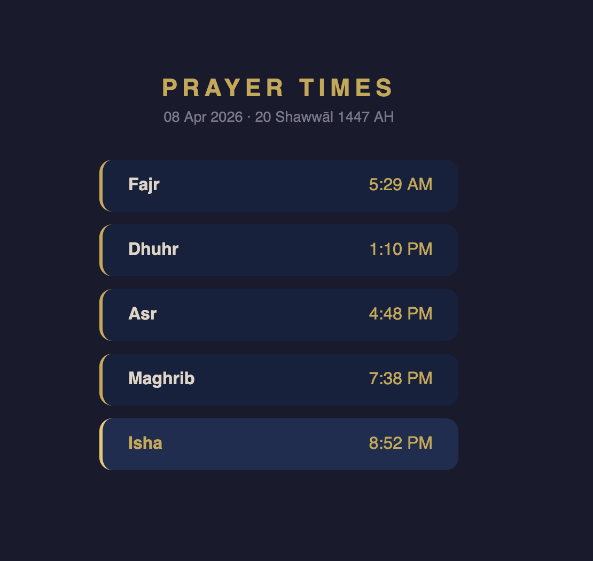
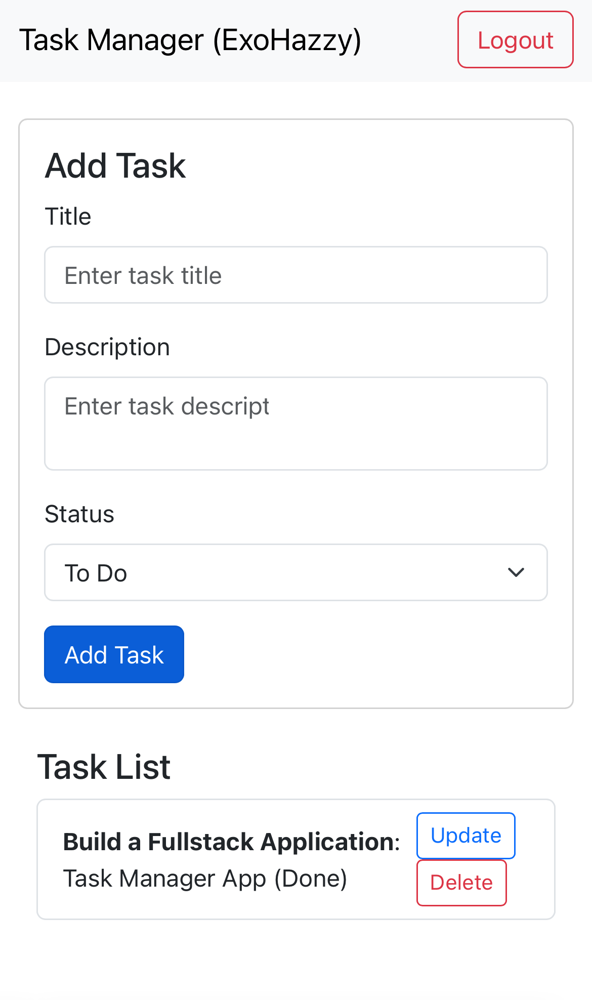

Most Recent Project
A full-stack habit tracker built around a personal floor/ceiling system: the floor is the smallest version of a habit that still counts as a win, and the ceiling is a stretch goal for good days. Includes a daily Log, a nightly check-in, and a weekly Snapshot. Built with React, Node.js, and MongoDB.
A clean, ad-free web app that displays daily Islamic prayer times based on your location. Built with vanilla JavaScript, HTML, and CSS using the Aladhan API. Features Hijri date display, automatic current prayer highlighting and installable as a PWA on iOS and Android.

A full-stack web app for secure task management, built with React, Node.js, Express, and MongoDB. Features JWT-based authentication, password hashing,
and a responsive UI, showcasing modern web development and cybersecurity skills aligned with CompTIA Security+.
